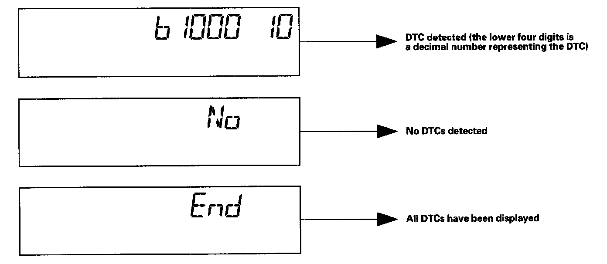
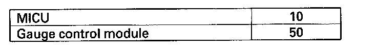

With Manufacturer's Scan Tool
How to display DTCs on the gauge control module (tach)
While in Test Mode 1, the DTCs which have been detected and stored individually by various B-CAN (Body-controller Area Network) units, will be shown one by one on the odometer display when the communication between the MICU and the gauge control module is normal. To scroll through the DTCs, press the select/reset button.

The unit that has stored the code can be identified by the number shown on the multi-information display.